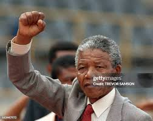

Nelson Rolihlahla Mandela (1918–2013) foi um dos maiores ícones do século XX e um farol de esperança e justiça para o mundo. Advogado e ativista, ele dedicou sua vida à luta contra o apartheid, o brutal sistema de segregação racial imposto pela minoria branca na África do Sul. Como um dos líderes do Congresso Nacional Africano (CNA), Mandela inicialmente advogou pela resistência não violenta. No entanto, após o Massacre de Sharpeville em 1960, ele fundou a ala armada do CNA. Por sua militância, foi preso em 1964 e condenado à prisão perpétua. Passou 27 anos na prisão, a maioria deles na temida Ilha Robben, tornando-se um símbolo global da resistência. Sua libertação em 1990 marcou o início da transição democrática na África do Sul. Em 1993, ele recebeu o Prêmio Nobel da Paz junto com o então presidente F. W. de Klerk, por seus esforços para acabar pacificamente com o apartheid. Em 1994, Mandela se tornou o primeiro presidente negro da África do Sul em eleições multirraciais, um momento histórico. Seu mandato foi notável pela política de reconciliação, onde, em vez de buscar vingança, ele trabalhou para unir um país profundamente dividido, promovendo a Comissão da Verdade e Reconciliação. Conhecido carinhosamente como "Madiba", Nelson Mandela deixou um legado duradouro de perdão, dignidade e compromisso inabalável com a igualdade e a liberdade, inspirando gerações.